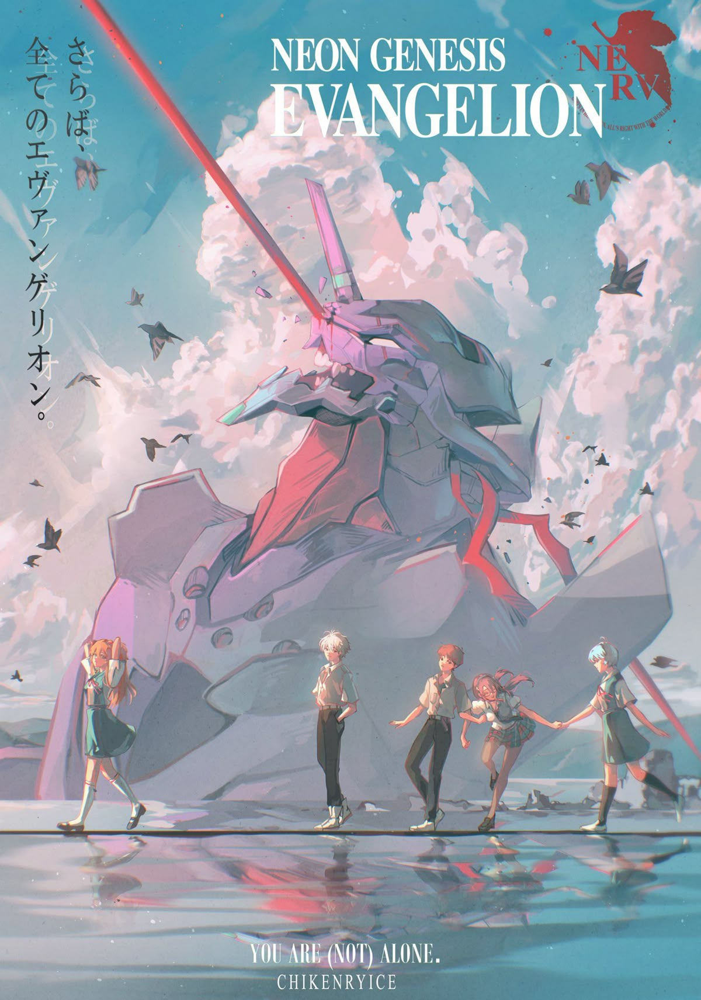

Evangelion
Thể loại: Tâm lý
Mô tả:
Evangelion là một bộ mecha – tâm lý – khoa học viễn tưởng nổi tiếng vì cách kể chuyện khác biệt và chiều sâu nội tâm. Dưới lớp vỏ là những trận chiến giữa robot khổng lồ và sinh thể bí ẩn, tác phẩm đào sâu vào nỗi cô đơn, áp lực, bản sắc cá nhân và mối quan hệ giữa con người với nhau. Đây là một câu chuyện nặng về cảm xúc và suy ngẫm, không chỉ là anime hành động thuần túy.
Tóm tắt cốt truyện:
Trong một tương lai gần, nhân loại bị đe dọa bởi những thực thể bí ẩn gọi là Angel. Để chống lại chúng, tổ chức NERV phát triển các Evangelion — những đơn vị chiến đấu đặc biệt chỉ có thể được điều khiển bởi một số thiếu niên được chọn. Ikari Shinji, một cậu bé hướng nội và thiếu tự tin, bị cha mình triệu tập để trở thành phi công Evangelion. Bị cuốn vào các trận chiến không mong muốn, Shinji cùng những người điều khiển khác phải đối mặt không chỉ với kẻ thù bên ngoài, mà còn với áp lực tinh thần, nỗi sợ bị từ chối và sự khó khăn trong việc kết nối với người khác. Càng về sau, câu chuyện càng tập trung vào thế giới nội tâm của các nhân vật, đặt ra câu hỏi về ý nghĩa của việc tồn tại, của việc sống vì bản thân hay vì người khác.
Bình luận
Vui lòng đăng nhập để bình luận.